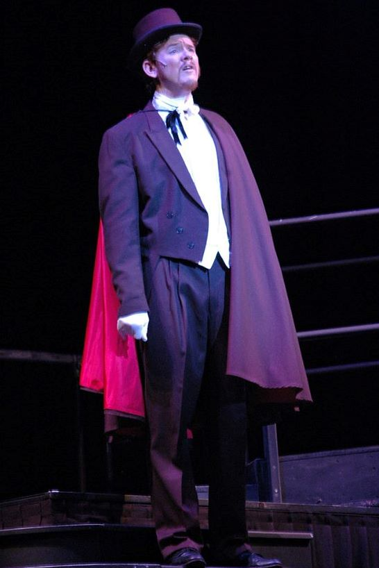

Alex Thomas
Alex Thomas has been performing in Townsville for more years than he would like to admit. He grew up locally and started in theatre in the Gang Show about 1985. He took part in school musicals while at Ignatius Park College and sang with the Townsville Junior Choral Society Choir….
After leaving Ignatius Park and going to James Cook University Alex joined the Choral Society Choir and began singing in the North Queensland Eisteddfod initially with the choir and later as a soloist. At various of these (he has lost count of the number he attended); he was awarded Champion of Champions and Most Pleasing Voice.
He has sung such musical roles such as Marius and Jean Valjean in “Les Miserables”, Dr Jekyll in “Jekyll & Hyde”, Emile de Becque in “South Pacific” and Curly in “Oklahoma” as well as being part of the ensemble. This year he turned his talents backstage and with his wife, Karen was Producer for the Choral Society’s production of “Rent.”
Alex is an Electronics Engineer who heads the Research and Development and IT Operations at Campbell Scientific Australia, part of the Campbell Scientific Group, an international environmental instrumentation supplier. The group covers territory in Australia and South East Asia and supplies equipment which measures details of the environment for storm weather, flood warnings, earth movement and many others
Alex has a 23 year old son, Sean who has followed his Father’s musical bent rather than Engineering. Having grown up in a musical family Sean plays at least five instruments and sings and tap dances. After completing a Bachelor in Popular Music on the Gold Coast, Sean is back in Townsville enlivening the Townsville scene.
Alex performed earlier this year with the Barrier Reef Orchestra at the T150 Gala Concert, and we are delighted to share the stage with him once again this evening, for another mesmerising show! See More
< Previous artist
Adam LopezNext artist >
Domenico TaraborrelliNext Concert